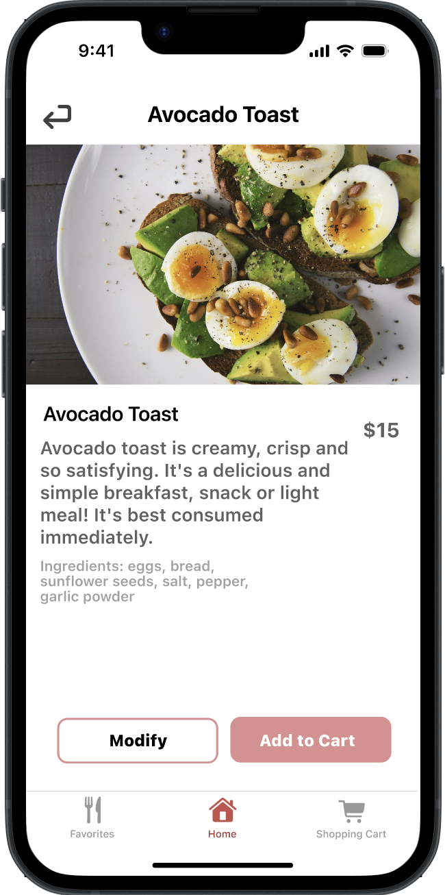
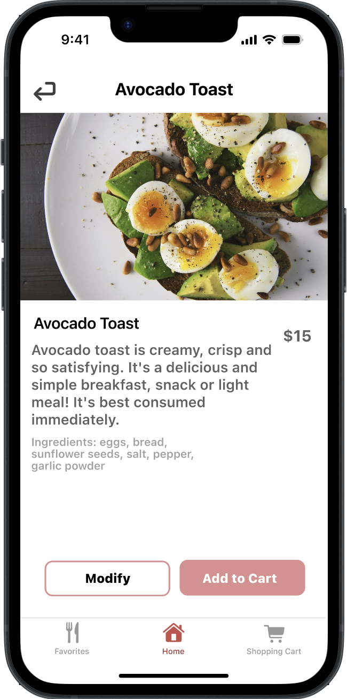

User Interface Challenges
As part of developing my UI/UX skills, I’ve taken on a variety of UI challenges to explore new techniques and push my creativity. These challenges gave me the opportunity to experiment with different layouts, visual styles, and interaction patterns while strengthening my design fundamentals. Along the way, I also sought feedback from peers, which helped me refine my work and approach each project with a more critical eye. Overall, these exercises have been an important part of my growth as a designer and have inspired me to keep exploring fresh ideas and innovative solutions.
Role: UI/UX Designer


 
